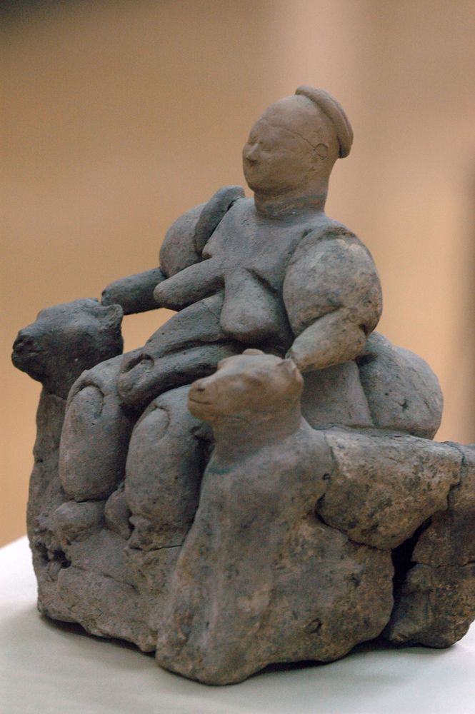
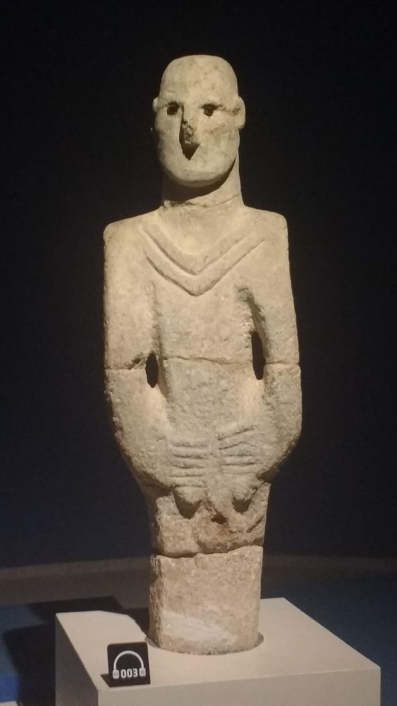

チャタルヒュユクの座る女性像
紀元前6000年頃
この小さなテラコッタの像は、両脇の2頭のネコ科の動物に手を置いて座る豊満な女性を表しています。1961年のチャタルヒュユクの発掘で穀物の貯蔵箱の中から見つかり、一般に豊穣と力の象徴と解釈されています。新石器時代のアナトリアで最もよく知られた作品のひとつです。
所蔵: アナトリア文明博物館 · アンカラ
📷 Dosseman · CC BY-SA 4.0トルコの博物館で見逃せない傑作：それぞれの物語、年代、所蔵博物館。

この小さなテラコッタの像は、両脇の2頭のネコ科の動物に手を置いて座る豊満な女性を表しています。1961年のチャタルヒュユクの発掘で穀物の貯蔵箱の中から見つかり、一般に豊穣と力の象徴と解釈されています。新石器時代のアナトリアで最もよく知られた作品のひとつです。
所蔵: アナトリア文明博物館 · アンカラ
📷 Dosseman · CC BY-SA 4.0
アラジャホユックの王侯墓から出土した青銅の太陽円盤と鹿の小像は、前期青銅器時代のアナトリア金属工芸の傑作です。儀式の際に竿の先に付けて掲げられたと考えられています。太陽円盤は長くアンカラとアナトリアの象徴となってきました。
所蔵: アナトリア文明博物館 · アンカラ
📷 Dosseman · CC BY-SA 4.0
約1万1千年前のこの石灰岩の像は、知られている中で最古の等身大の人物像とされています。1993年にシャンルウルファの建設工事中に見つかり、黒曜石の目が今もはめ込まれたままです。ギョベクリテペの時代の世界に光を当てています。
所蔵: シャンルウルファ考古学博物館 · シャンルウルファ
📷 Immanuelle · CC BY-SA 4.0
ゼウグマから救出され、そのまなざしで有名なこのモザイクは、ゼウグマ・モザイク博物館の薄暗い専用の部屋に展示されています。発掘後に国外へ密輸された断片が2018年にアメリカから返還され、作品は再び完全な姿になりました。ガズィアンテプの象徴となっています。
所蔵: ゼウグマ・モザイク博物館 · ガズィアンテプ
📷 Dosseman · CC BY-SA 4.0
1887年にオスマン・ハムディ・ベイがシドンの王家の墓地で発見したこの大理石の石棺は、名前の由来となった戦いと狩りの場面でアレクサンドロス大王を描いています。おそらくシドン王アブダロニモスのために作られたもので、元の彩色の跡が今も見られます。
所蔵: イスタンブール考古学博物館 · イスタンブール
📷 Dosseman · CC BY-SA 4.0
ハットゥシャで見つかったこの粘土板は、ヒッタイト王ハットゥシリ3世とエジプトのファラオ、ラムセス2世の間の条約のヒッタイト版です。知られている中で最古の成文平和条約のひとつに数えられ、その複製はニューヨークの国連本部に展示されています。
所蔵: イスタンブール考古学博物館 · イスタンブール
📷 Osama Shukir Muhammed Amin FRCP(Glasg) · CC BY-SA 4.0
エルサレムで岩を掘った水路の開削を記録したこの短いヘブライ語の碑文は、1880年に発見され、オスマン時代にイスタンブールへ運ばれました。両端から掘り進めた作業員たちが中央で出会った様子を記した、他に類のない記録です。知られている中で最古級のヘブライ語碑文のひとつです。
所蔵: イスタンブール考古学博物館 · イスタンブール
📷 ywpark2003 (Prof. Yong Woo Park) · CC0
1980年にペルゲで見つかったこのローマ時代の大理石像の上半身は、国外へ密輸され、長年ボストンの美術館にありました。2011年にトルコへ返還され、下半身と再びひとつになりました。この像は文化財返還の闘いの象徴となっています。
所蔵: アンタルヤ博物館 · アンタルヤ
📷 Carole Raddato · CC BY-SA 2.0


アフロディシアスでローマ皇帝に捧げられた複合施設セバステイオンを飾った大理石のレリーフは、神々や英雄と並ぶ皇帝たち、そして征服された民族の擬人像を描いています。現存するパネルの多くは、そのために建てられた博物館の大きな展示室に並んでいます。アフロディシアス彫刻学派の卓越した技を映しています。
所蔵: アフロディシアス博物館と遺跡 · アイドゥン
📷 Dosseman · CC BY-SA 4.0

スルタンアフメトでは、ビザンツ皇帝の大宮殿の列柱の中庭の床モザイクが、発見された場所で展示されています。狩り、野獣の戦い、羊飼い、遊ぶ子どもたちの生き生きとした場面は、ビザンツ美術で最も印象的な作品のひとつです。博物館はブルーモスクの裏のアラスタ・バザールにあります。
所蔵: 大宮殿モザイク博物館 · イスタンブール
📷 Dosseman · CC BY-SA 4.0
ジャラール・ウッディーン・ルーミーの墓は、コンヤの象徴である緑のタイルのドーム（クッベ・イ・ハドラ）の下にあります。霊廟には刺繍の覆いをかけた棺、貴重な『マスナヴィー』の写本、メヴレヴィーの楽器や衣服が展示されています。毎年12月のシェビ・アルスの式典には世界中から人々が訪れます。
所蔵: メヴラーナ博物館 · コンヤ

ヒッタイトの首都ハットゥシャのスフィンクス門を守っていた2体のスフィンクスのうち、1体は1917年に修復のためドイツへ運ばれ、2011年にトルコへ返還されました。もう1体はイスタンブールから運ばれ、2体は現在ボアズキョイ博物館で再び並んで展示されています。石灰岩から彫られた、ヒッタイトの記念碑的美術の最も優れた例のひとつです。
所蔵: ボアズキョイ博物館 · チョルム
📷 Murat Özsoy 1958 · CC BY-SA 4.0